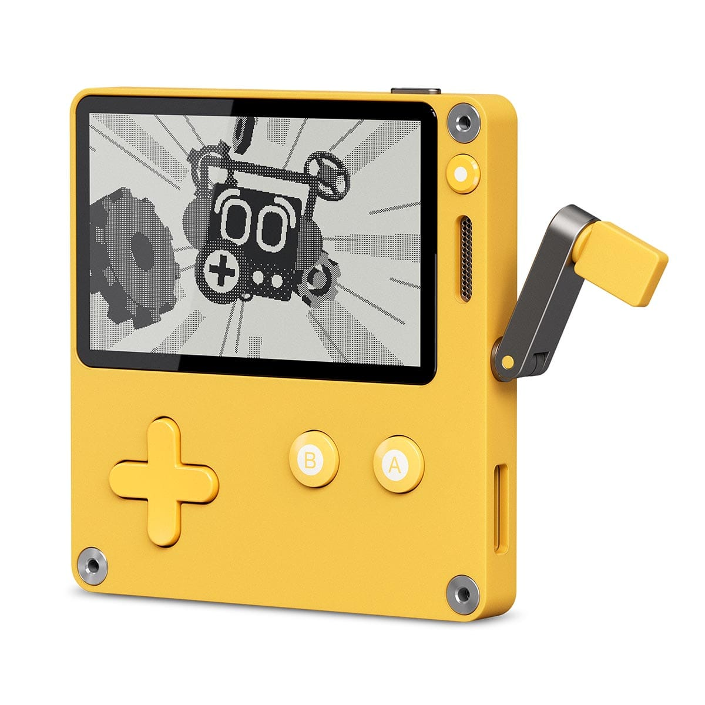

We have looked at how switches (buttons) and variable resistors (potentiometers) work. For your midterm assignment, you will construct your own creative input device, using the same electronic principles:
When it comes to hardware, interfaces are the physical and interactable means that bridge the communication between humans and computers. They can take many forms, from traditional input devices like keyboards and mice to more innovative and creative designs that “enhance” user experience.
We can take a look around us and see many examples of them. We use interfaces every day.
You can think of interfaces as the touchpoints, or the computer’s “sensors”, that allow it to perceive the world around it.
This is an art course, so we can stretch, challenge, discard, or reinvent what an interface can be.
What if we challenged the word “enhance”?
What if we made something for people with disabilities? What if it was for someone without hands, eyes, or ears? What if it was for someone who could not speak? (DIYAbility)
What if we made something that was not for humans? What if it was for animals? Plants? For physical phenomena like wind or light? For an imaginary being? (Video)
What if we made something that was not even useful at all? What if it was just for fun? For play? For aesthetics? For a pointless task? For a ritual? For a protest?
What if it was wearable? Or portable? Or stationary? What if it was anchored to a specific location? What if it was extremely heavy? Or extremely light? Can you imagine an interface with a bird’s feather?
What if it was large scale? Or tiny?
What if it used unusual materials? Or recycled materials? Or everyday materials? Or organic materials? Can you imagine an interface with a fork? Or with a banana?
What if it required more than one person to use? What if it was made for a community?
What if it was extremely simple? Or extremely complex?
Design a physical interface that could be imagined to be connected to a computer.
Be imaginative with your design, even if it is made with materials like cardboard, paper, aluminum foil, or tape. Think of it as a prototype for a more refined version of your interface. Don’t let the materials limit your ideas.
We will share our work with our peers in our first class critique on the due date, so your project should be ready to present. Critiques usually take the full 2.5 hours of class.
This assignment will not involve any major code writing (unless you want to!), but we do need to confirm that your interface can be read by the Arduino, and use the Serial Monitor to print a reading based on interaction.
You can also use the Serial Monitor to print out an imagined
effect. For example, if the button is on,
Serial.println("LEDs turn on"); if the button is
off, Serial.println("LEDs turn off").
You have the option of working with either a digital
input using digitalRead() (on/off: 2
possible states) or an analog input using
analogRead() (0–1023: 1024 possible states). Your
design must work with one of these two sketches:
Wire your switch the same way as the Button sketch, with the 10kΩ pull-down resistor.
void setup() {
// Your switch should be connected to Pin 2
pinMode(2, INPUT);
// Using serial monitor to confirm input is working
Serial.begin(9600);
}
void loop() {
// read the state of your switch (is the circuit open or closed?)
int sensorValue = digitalRead(2);
// print results
Serial.println(sensorValue);
}Wire your variable resistor as a voltage divider, the same way as the Velostat sensor in the DIY Pressure Sensor Workshop.
void setup() {
// Using serial monitor to confirm input is working
Serial.begin(9600);
}
void loop() {
// read the value coming from your sensor (What voltage level is it? 0-3.3V)
int sensorValue = analogRead(A0);
// print results
Serial.println(sensorValue);
}To get you to start thinking about what kind of interface you want to create, here are some examples of switches and variable resistors that you can use as a starting point.
Guides by Pete Prodoehl:

ART 150 student examples from the section taught by Sabrina Raaf: art150.nma
One button games: c1ic.mx
Take a look at this TED Talk by Holly Cohen: